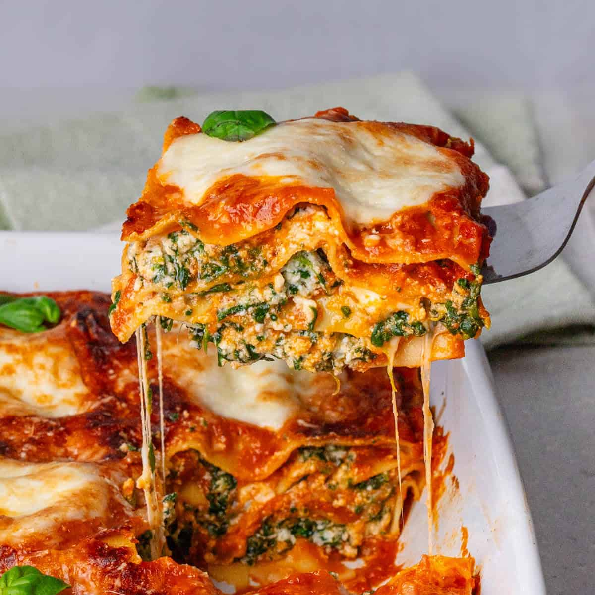

Lasagna Recipe
Home

Description
This recipe makes a delicious classic lasagna that is creamy, meaty, and flavorful! Great for the whole family!
Ingredients
For the Meat Sauce
- 3/4 pound Italian sausage
- 3/4 pound lean ground beef
- 1 medium onion diced
- 3 cloves garlic minced
- 1 (6 ounce) can tomato paste
- 1 (28 ounce) can crushed tomatoes
- 1 (15 ounce) can tomato paste
- 1 tablespoon sugar
- 1 table spoon dried Italian seasoning
- 1 1/2 teaspoons salt
- 1 teaspoon dried basil
- 3/4 teaspoon ground black pepper
For the Cheese Filling
- 1 (15 ounce) container ricotta cheese
- 1 large egg beaten
- 1 tablespoon chopped fresh parsley
- 1/2 teaspoon salt
- 1/4 teaspoon ground black pepper
For the Assembly
- 12 lasagna noodles
- 2 cups sliced mozzarella
- 1/4 cup grated parmesan
Steps
- Preheat oven to 375 F
For the Meat Sauce
- Heat a large Dutch oven over medium-high heat. Add the sausage and beef, and cook, breaking up any chunks with the back of a spoon while stirring occasionally, until browned, about 6 to 8 minutes
- Add the onion and garlic, and cook stirring often until tender, about 5 minutes. Stir in the tomato paste, and cook stirring constantly for 1 minute. Stir in the crushed tomatoes, tomato sauce, sugar, Italian seasoning, salt, basil, and pepper. Bring to a simmer.
- Reduce the heat to medium-low, and simmer, stirring occasionally, until slightly thickened, about 15 to 20 minutes.
For the Cheese Filling
- n a medium bowl, stir together ricotta, egg, parsley, salt, and pepper. Set aside.
For the Assembly
- While the sauce is simmering, bring a large pot of salted water to a boil over high heat. Add the lasagna noodles, and cook until al dente, according to the package directions. Drain, rinse with cold water, and drain again.
- Lightly grease a 9x13-inch casserole dish with cooking spray.
- Spread 2 cups of meat sauce in the bottom of the prepared dish. Layer 4 cooked noodles in an even layer, slightly overlapping if necessary. Spread half of the cheese filling (about 1 cup) in an even layer over the noodles. Repeat the layers once more (sauce, noodles, cheese).
- Spread 2 cups of meat sauce over the cheese filling, top with the remaining 4 noodles, and spread the remaining meat sauce in an even layer over the top of the noodles. Top with the mozzarella and parmesan. Cover with aluminum foil.
- Bake for 30 minutes. Uncover and continue baking until the cheese is melted and the lasagna is heated through, about 15 minutes more. Increase the oven temperature to broil, and broil until the cheese is browned, about 2 to 3 minutes more. Let rest for 15 minutes before serving.